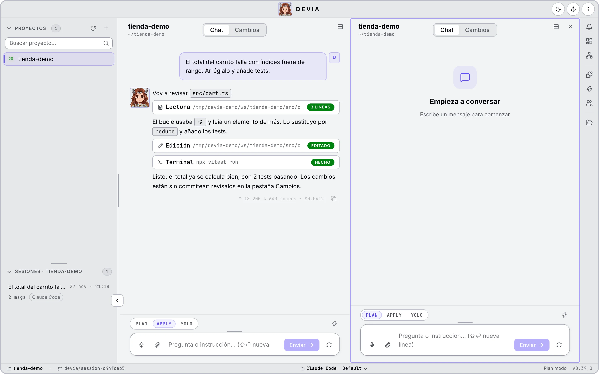
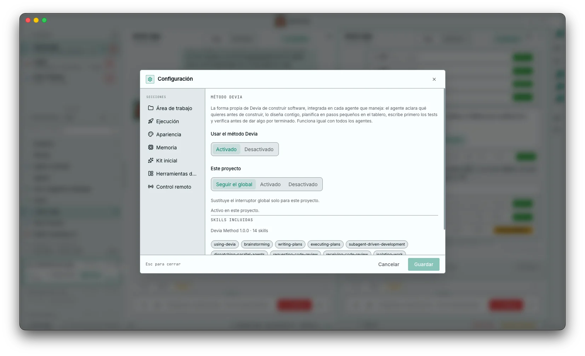
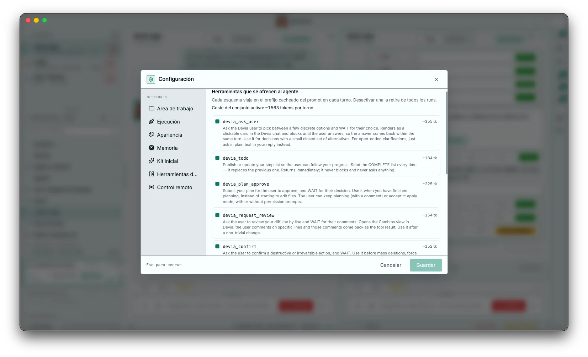
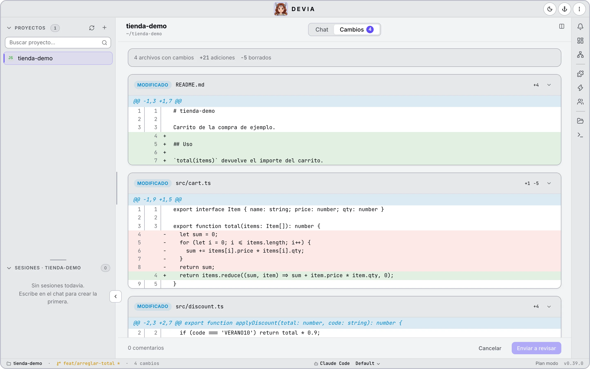
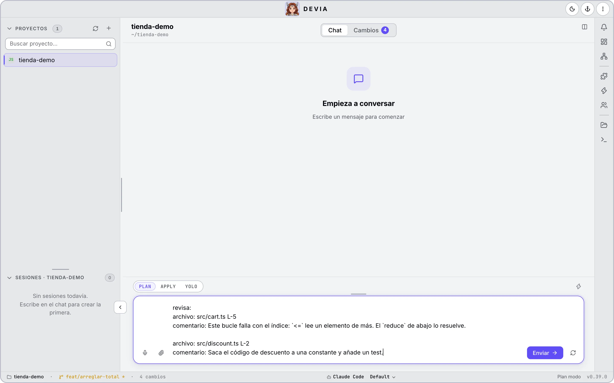
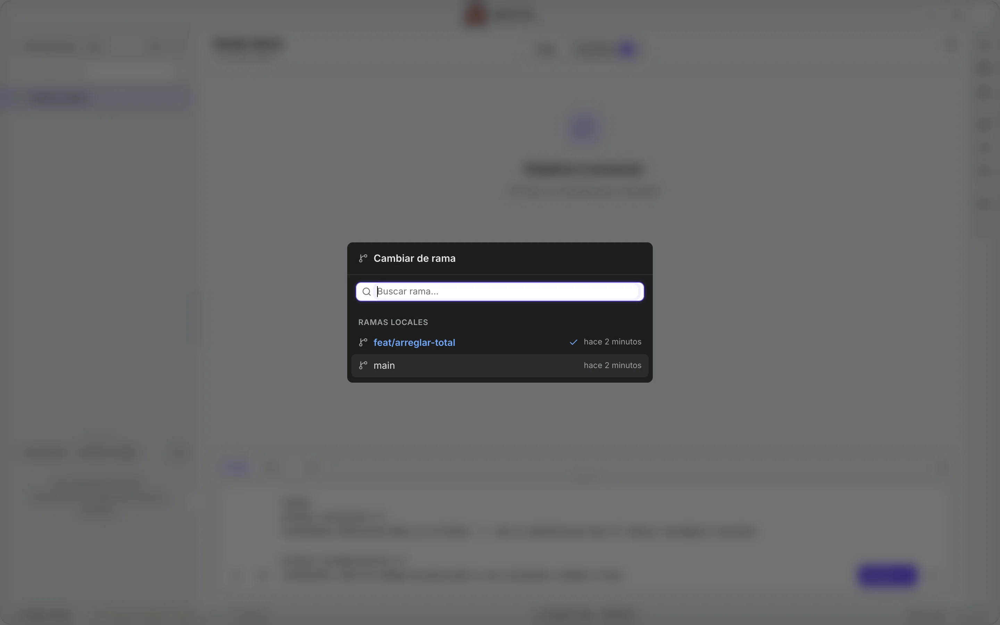
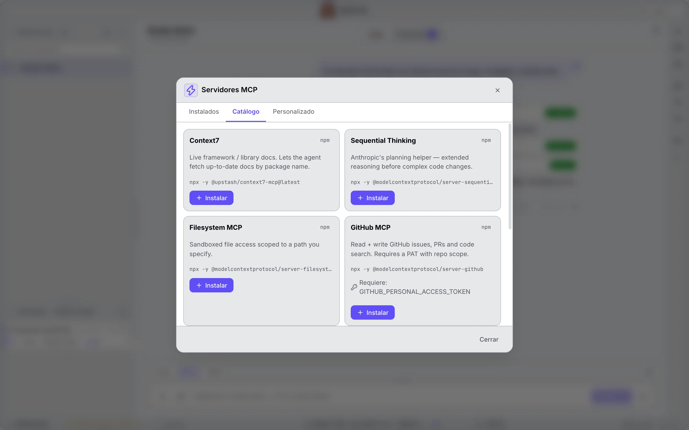
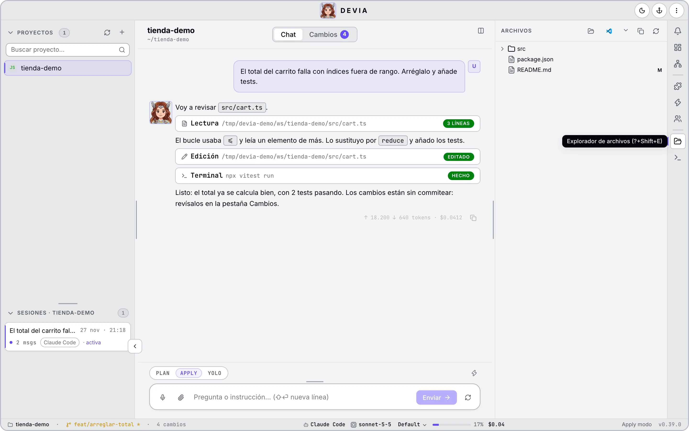
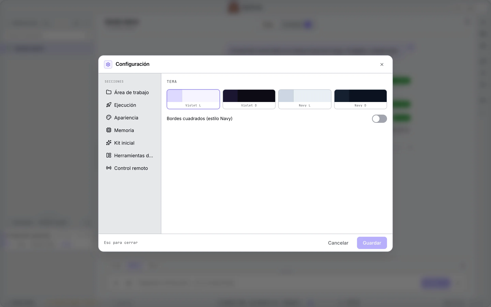
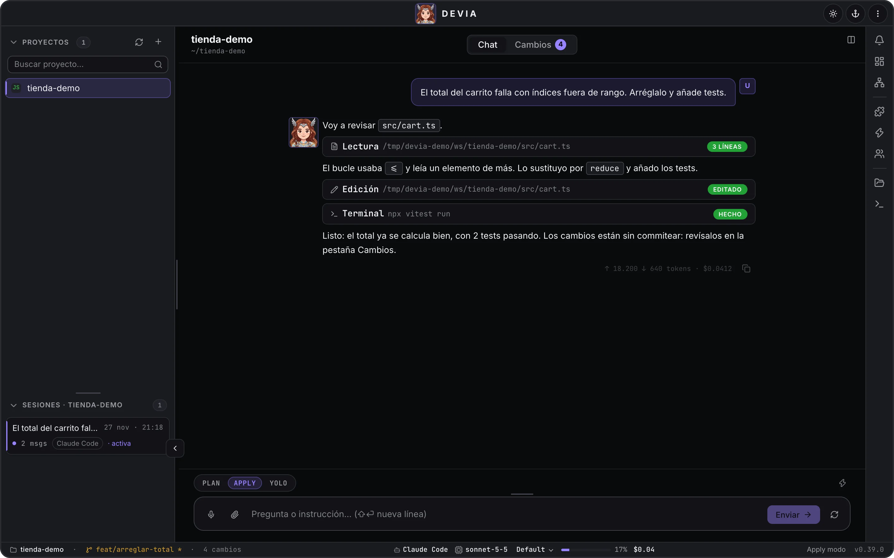

Documentation de Devia Desktop
Qu’est-ce que Devia Desktop ?
Devia Desktop est une application de bureau pour développer des logiciels avec des agents IA. C’est une interface unifiée au-dessus de plusieurs CLI agentiques (Claude Code, Codex, Gemini CLI et plus encore) qui transforme le travail avec des agents en terminal en une expérience visuelle, organisée et multi-projets.
C’est un logiciel open source (Apache-2.0) : gratuit et avec toutes les fonctionnalités, disponible pour Windows, macOS et Linux. Tout fonctionne en local, sur vos projets et vos CLI ; aucun compte ni connexion à un service Devia n’est nécessaire.
Installation
Windows
- Téléchargez le programme d’installation
.exedepuis la page de téléchargements. - Exécutez-le et choisissez le répertoire d’installation (installation par utilisateur, sans droits d’administrateur).
- Si SmartScreen affiche un avertissement, cliquez sur « Plus d’informations → Exécuter quand même ».
macOS
- Téléchargez le
.dmgcorrespondant à votre architecture (Apple Silicon ou Intel). - Ouvrez-le et faites glisser Devia dans le dossier Applications.
- L’application est signée et notariée par Apple : elle s’ouvre sans étape supplémentaire.
Linux
- AppImage : téléchargez-le, donnez-lui les droits d’exécution avec
chmod +x Devia-*.AppImageet lancez-le. - Debian/Ubuntu : installez le paquet avec
sudo dpkg -i devia_*_amd64.deb.
Premiers pas
- Choisissez votre workspace. Au premier lancement de Devia, une fenêtre modale vous demande le dossier racine où se trouvent vos projets (par exemple
~/repos). Devia liste les projets qu’il contient et détecte leur technologie. - Connectez un agent. Devia détecte les CLI agentiques installés sur votre machine et vous laisse choisir l’agent actif dans les Paramètres. Chaque projet est configuré pour que l’agent fonctionne sans réglage manuel.
- Conversez. Ouvrez un projet et saisissez votre première instruction dans le compositeur. Choisissez le mode d’exécution : plan (planifie seulement), apply (applique avec permissions) ou apply-yolo (sans confirmations), selon le degré d’autonomie que vous voulez accorder.
- Relisez. Chaque réponse arrive en streaming avec du markdown, les appels d’outils se déploient en cartes et les modifications de l’agent s’affichent sous forme de diffs en ligne.
Agents compatibles
Devia pilote les CLI de codage suivants et vous pouvez passer de l’un à l’autre sans quitter l’application. Le niveau d’intégration varie selon l’agent :
| Agent | Intégration |
|---|---|
| Claude Code | La plus complète : serveurs MCP par exécution, cartes de sous-agents dans le chat et reprise automatique après une limite d’utilisation. |
| OpenCode | Intégration dédiée. |
| Pi | Intégration dédiée. |
| Kimi et Hermes | Via Agent Client Protocol (ACP). Le profil de Kimi n’est pas encore vérifié avec le CLI réel. |
| Codex, Gemini CLI, Cursor Agent, GitHub Copilot CLI, Grok, Qwen, Qoder et DeepSeek | Intégration générique sur le streaming de chaque CLI. |
| Votre propre agent | Tout CLI qui parle ACP peut être défini dans agent-defs.json. |
Lorsqu’une session se poursuit avec un agent différent de celui qui l’a démarrée, Devia effectue un transfert de contexte : il injecte un résumé du travail (objectif, fichiers touchés et derniers échanges) dans le premier tour du nouvel agent et ajoute un séparateur dans le chat. Le résumé généré par IA nécessite Claude et ANTHROPIC_API_KEY.
Ce que Devia sait faire
Agents et exécution
- Modes plan, apply et apply-yolo enregistrés par session. Leur application dépend de l’agent : avec Codex, par exemple, le mode plan s’appuie sur les instructions du prompt.
- Importez des sessions existantes de Claude Code, Codex et Grok et poursuivez-les dans Devia.
- Avec Claude Code, Devia reprend la session tout seul après une limite d’utilisation, tant que l’application reste ouverte.
- Contexte utilisé, coût, tokens et compactages de chaque session, calculés en local.
- File d’instructions par projet : mettez des prompts en file pendant que l’agent travaille, réordonnez-les par glisser-déposer, mettez en pause et reprenez.
- Les appels des sous-agents de Claude Code apparaissent imbriqués dans le chat.


Multi-projets et vue fractionnée
- Liste, création (vide ou depuis un modèle) et clonage de projets ; favoris épinglés dans la barre latérale.
- Historique des sessions par projet qui survit aux redémarrages.
- Jusqu’à 4 panneaux (2×2) dans la même fenêtre, chacun avec sa propre session et son agent travaillant en parallèle.
- Chaque panneau supplémentaire travaille isolé dans son propre git worktree, pour que deux agents ne touchent jamais aux mêmes fichiers.

Contexte et mémoire
- Mémoire persistante entre les sessions (
devia-memory), personnelle et par projet, avec réordonnancement sémantique optionnel. L’agent la consulte et l’alimente ; vous la gérez dans les Paramètres. - Graphe de code maison (6 langages) que les agents interrogent via MCP, avec une vue
/graphpour l’explorer. - Code mode : l’agent écrit un script TypeScript qui s’exécute dans un sandbox sur les serveurs MCP que vous choisissez et ne renvoie que le résultat. Dans cette version, les scripts ne font que lire.

Méthode et planification
- Kanban par projet avec specs, tâches et dépendances que l’agent lit et met à jour via MCP (
devia-kanban). L’état vit en dehors du dépôt. - Devia Method : une méthode de développement maison (skills et prompt de démarrage) que Devia fournit à tous les agents, activable par projet.
- Cartes interactives pour n’importe quel agent : questions, approbation de plans, relecture de modifications, confirmations et sélection. Uniquement sur le bureau.
- Gestionnaire de skills, locaux ou depuis GitHub, et de sous-agents réutilisables que Devia synchronise avec chaque CLI.



Git et relecture
- État du dépôt en direct dans le pied de page (branche, modifications non commitées, commits en retard) et sélecteur de branches avec recherche ; le pull est toujours en fast-forward.
- L’onglet Modifications liste les fichiers modifiés avec leur diff en ligne et le total des ajouts et suppressions.
- Cliquez sur n’importe quelle ligne du diff pour écrire un commentaire ; vous pouvez en laisser plusieurs, les modifier ou les supprimer.
- Envoyer à relire transforme les commentaires en un prompt
revisa:(fichier, ligne et commentaire) qui reste dans le compositeur pour que vous l’envoyiez à l’agent. - Instantanés avec restauration de la configuration des MCP, skills et sous-agents avant de la modifier.
- Les commits, les push et les pull requests sont faits par l’agent avec ses propres outils : Devia ne les crée pas lui-même.




Serveurs MCP
- Gestionnaire de serveurs Model Context Protocol avec un catalogue initial : installez, activez et testez des serveurs. Devia écrit la configuration dans le format natif de 9 agents.
- Chaque serveur peut être proposé directement à l’agent ou via code mode.

Télécommande via Telegram
- Lancez des exécutions, changez de mode ou d’agent, consultez l’état (branche, contexte utilisé, coût) et conversez avec l’agent depuis Telegram.
- Envoi de pièces jointes à l’agent et réception des fichiers qu’il génère. Miroir optionnel de la conversation du bureau.
- Ne fonctionne que tant que Devia est ouvert et ne répond qu’à un seul chat autorisé. Les cartes interactives ne s’affichent pas dans Telegram : l’agent pose ses questions en texte.

Terminal, voix et plus
- Terminal intégré par projet avec un vrai PTY, et ouverture du projet dans 10 IDE.
- Orchestration de Docker Compose : deploy, down et logs par projet.
- Pièces jointes de tout type (jusqu’à 50 Mo par fichier) et archive des fichiers générés par l’agent.
- Dictée vocale locale ; aujourd’hui uniquement en espagnol.
- Journal d’audit de chaque tool-call.
- Mise à jour automatique des installations (sous Linux, uniquement avec AppImage).
- Thème clair ou sombre, familles Violet et Navy et bords carrés en option.
- Explorateur de fichiers du projet avec l’état git de chaque fichier.



Capacités et limites
Un résumé honnête de ce que Devia fait aujourd’hui et de ce qu’il ne fait pas encore, pour que vous sachiez à quoi vous attendre.
Ce qu’il fait
- Piloter 13 CLI agentiques depuis une fenêtre, avec les modes plan, apply et apply-yolo.
- Vue fractionnée jusqu’à 4 panneaux avec des git worktrees isolés.
- Kanban, mémoire, graphe de code et code mode accessibles à l’agent via MCP.
- Gestionnaire de MCP, de skills et de sous-agents.
- Cartes interactives pour poser des questions, approuver des plans et relire des modifications.
- Commentaires de relecture par ligne envoyés à l’agent.
- Télécommande via Telegram, avec envoi de fichiers.
- Terminal, Docker Compose et ouverture dans des IDE.
Ce qu’il fait en partie
- Import de sessions : uniquement depuis Claude Code, Codex et Grok.
- Reprise après une limite d’utilisation : uniquement Claude Code, et seulement tant que l’application reste ouverte.
- Cartes de sous-agents dans le chat : uniquement Claude Code.
- Réinjection de la mémoire quand l’agent compacte son contexte : uniquement Claude et Pi.
- Agents personnalisés : uniquement ceux qui parlent ACP.
- Dictée vocale : uniquement en espagnol, et son fonctionnement dans la version empaquetée reste à vérifier.
- Interface en 11 langues : l’espagnol et l’anglais sont complets ; dans les autres, certains textes peuvent ne pas être traduits.
- Telegram : uniquement tant que Devia est ouvert, avec un seul chat autorisé, et sans cartes interactives.
Ce qu’il ne fait pas encore
- Créer des commits, faire des push ou ouvrir des pull requests depuis l’interface.
- Utiliser GitHub, GitLab, Linear ou Jira comme source de tâches.
- Éditeur de fichiers intégré : l’arborescence du projet est en lecture seule et les fichiers s’ouvrent dans votre IDE.
- Un coordinateur qui lance et supervise plusieurs agents travailleurs. Aujourd’hui, le parallélisme est la vue fractionnée, pilotée par vous.
- Des automatisations planifiées ou déclenchées par des événements.
- Exécuter sur des serveurs distants via SSH, dans le cloud ou sans interface graphique.
- Une application mobile native : le mobile s’utilise via Telegram.
- Un système de plugins pour des panneaux ou des thèmes tiers.
- Le contrôle de l’ordinateur, des émulateurs mobiles ou un navigateur intégré.
Configuration et données
Presque toutes les données de Devia résident sur votre disque, sous ~/.devia-app/ (sous Windows, C:\Users\<tu-usuario>\.devia-app\) :
| Chemin | Contenu |
|---|---|
devia-app.config.json | Configuration : workspace, agent actif, langue… (les secrets, comme le token Telegram, sont stockés chiffrés) |
projects/<clé>/ | Données par projet : tableau Kanban (kanban.json), mémoire (memory.json) et historique de chat (session-<id>.json) |
memory-global.json | Mémoire personnelle |
mcp-servers.json | Serveurs MCP configurés |
snapshots/ | Instantanés de la configuration avant sa modification |
worktrees/ | Git worktrees des panneaux supplémentaires de la vue fractionnée |
attachments/ | Fichiers joints dans le compositeur ou via Telegram |
outbox-archive/ | Fichiers générés par l’agent |
Pour sauvegarder votre Devia, il suffit de copier ce dossier. Le supprimer remet l’application dans son état initial. Le journal d’audit des tool-calls est conservé à part, dans le dossier de données utilisateur de l’application.
Mises à jour
Les versions publiées sont annoncées dans le manifeste public de ce site : updates/latest.json. Il contient la dernière version disponible, la date de publication, les notes et les liens de téléchargement par plateforme.
Les installations de Devia Desktop se mettent à jour toutes seules depuis les Releases du dépôt (sous Linux, uniquement avec AppImage). Vous pouvez aussi consulter la dernière version à la main ou depuis vos scripts :
curl -s https://dherrero.github.io/devia/updates/latest.json | jq .versionLes questions les plus fréquentes
Devia est-il gratuit ?
Oui. Devia Desktop est open source (Apache-2.0), avec toutes les fonctionnalités, sur toutes les plateformes.
Ai-je besoin d’un compte ou d’une connexion à un service Devia ?
Non. Devia Desktop fonctionne en local. Les seuls services externes utilisés sont ceux des agents CLI que vous avez configurés.
Devia inclut-il les agents IA ?
Non : Devia est l’interface qui les pilote. Vous devez avoir installé au moins un CLI agentique (Claude Code, Codex, Gemini CLI, OpenCode…) avec ses identifiants. Devia les détecte et s’occupe du reste.
Mes données quittent-elles ma machine ?
Sessions, mémoire, kanban et configuration résident dans ~/.devia-app/. La dictée vocale s’exécute aussi en local. Seul voyage ce que le CLI de l’agent que vous utilisez envoie à son propre fournisseur.
Dans quelles langues est-il disponible ?
Ce site existe en espagnol, anglais, valencien, français, allemand, italien, portugais, russe, chinois, hindi et arabe. L’application propose les mêmes 11 langues, mais seuls l’espagnol et l’anglais sont complets : dans les autres, certains textes peuvent ne pas être traduits.
Puis-je le contrôler depuis mon mobile ?
Oui, via Telegram, tant que Devia est ouvert sur votre ordinateur. Il n’existe pas d’application mobile native.
Comment signaler un problème ?
Ouvrez un ticket dans le dépôt GitHub de Devia en indiquant les étapes pour le reproduire et votre plateforme (Windows/macOS/Linux).